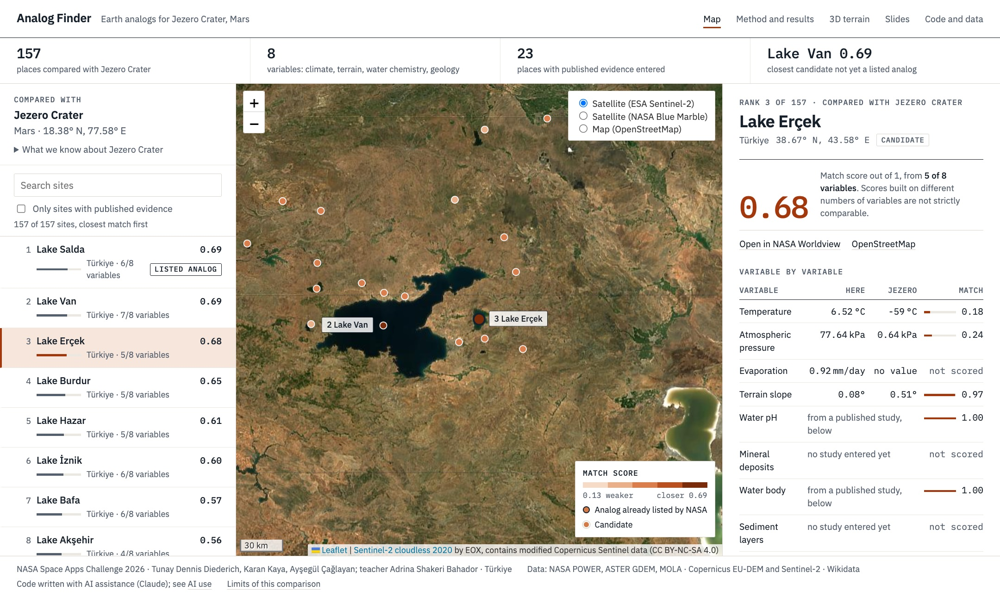
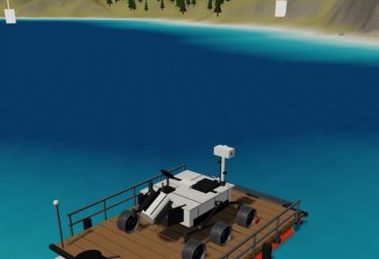
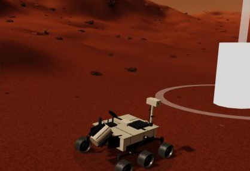

Searching Earth's lakes for twins of Jezero Crater, Mars, and a new candidate: Lake Erçek
Team: Team Physics Members: Tunay Dennis Diederich, Karan Kaya, Adrina Shakeri Bahador; teacher: Ayşegül Çağlayan Country: Türkiye Challenge: Identify Earth Locations that Analog the Permanent Moon Base Locations and Mars NASA Space Apps Challenge 2026, Universal Event
Drafted with AI assistance (Claude). Charts are drawn by code from the project data.1 / 7
The problem
Mission teams rehearse on Earth, at analog sites, before they fly.
Jezero Crater was a lake about 3.5 billion years ago. Perseverance is searching it for signs of ancient life.
NASA's Planetary Analog Explorer pairs Jezero with one Earth lake: Lake Salda in Türkiye.
The challenge asks for new analogs, identified and characterized with open data.
Are there more lakes like Salda, and can open data find them?
Drafted with AI assistance (Claude). Charts are drawn by code from the project data.2 / 7
How it works
Measured from space-agency data
Temperature, air pressure, evaporation: NASA POWER
Terrain slope: ASTER (NASA and METI) on Earth, MOLA on Mars, same 900 m grid
Read from published studies
Water pH
Mineral deposits
Water body
Sediment layers
Each entered as a 0 to 1 match, with its source.
Score = weighted average of the variables available. Every score shows how many variables it rests on.
Drafted with AI assistance (Claude). Charts are drawn by code from the project data.3 / 7
The search: every natural lake in Türkiye, on a live map

149 lakes from Wikidata, each scored against Jezero, on ESA Sentinel-2 imagery. Pick a lake to see every
variable next to Jezero's value and the published evidence with its source. 2naydennis.github.io/analog-finder
Drafted with AI assistance (Claude). Charts are drawn by code from the project data.4 / 7
What we found
Grey: analog already listed by NASA. Orange: candidates, with the number of variables behind each score.
Lake Erçek, beside Lake Van, is a closed-basin soda lake with pH 9.7, barely studied and not yet listed as an analog.
Next step: test its shoreline for carbonates like Salda's. Its field-test plan is on the website.
Drafted with AI assistance (Claude). Charts are drawn by code from the project data.5 / 7
Does it work, and where does it stop?
Check
Lake Salda, NASA's own Jezero analog, ranks 1 of 157.
On climate and slope alone, Salda falls to 45th: chemistry and geology carry the match.
Weights redrawn at random 5,000 times: share of draws in the top 3 and top 5
Top 3
Top 5
Lake Salda
77%
96%
Lake Van
81%
95%
Lake Erçek
87%
98%
Lake Burdur
34%
86%
Limits
Earth has over 100 times Mars's air pressure everywhere.
Jezero's ancient lake has no measured pH.
Lakes are scored on 3 to 7 variables, so close scores are not strictly comparable.
Lake Van is already studied in a Mars context. We cover Mars only, not the Moon.
Drafted with AI assistance (Claude). Charts are drawn by code from the project data.6 / 7
Explore the sites in 3D

Lake Salda, by boatLake Erçek, our lead candidate

Jezero Crater, Mars
Terrain from NASA SRTM and MOLA elevation data. Drive between published-evidence points and compare each lake with Jezero. A dedicated Lake Erçek page shows it next to Jezero from orbit, with a field-test plan: 31 km from Van airport, best in July and August.
The boat, rocks and trees are illustrative. Open data: NASA POWER, MOLA, ASTER, SRTM, Planetary Analog Explorer; Copernicus EU-DEM and
Sentinel-2 (ESA). Next: a field check of Lake Erçek, lakes beyond Türkiye, a Moon version. AI tools wrote much of the code and drafted
text; every use is listed in the repository.
Drafted with AI assistance (Claude). Charts are drawn by code from the project data.7 / 7